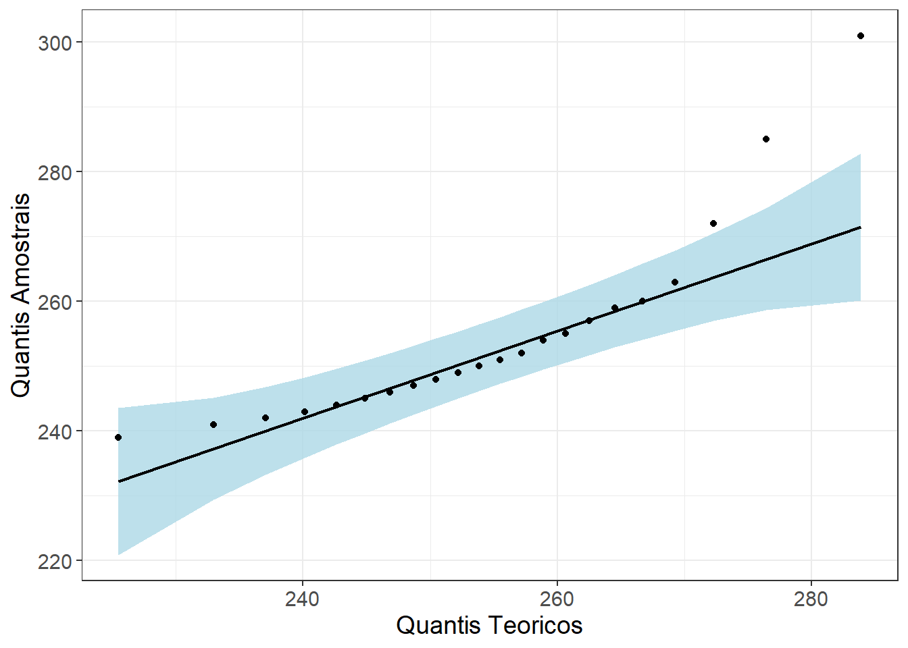
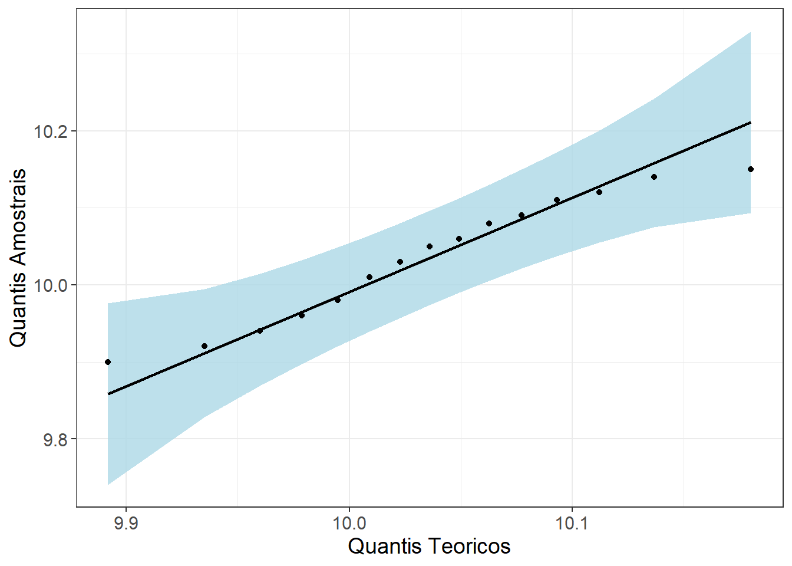
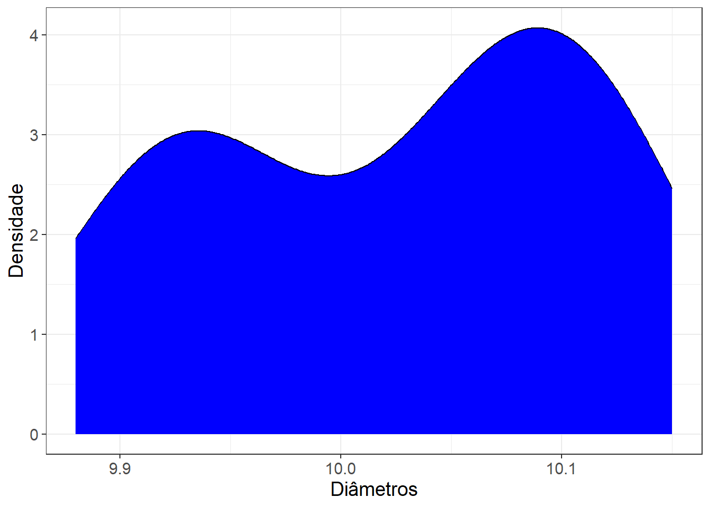
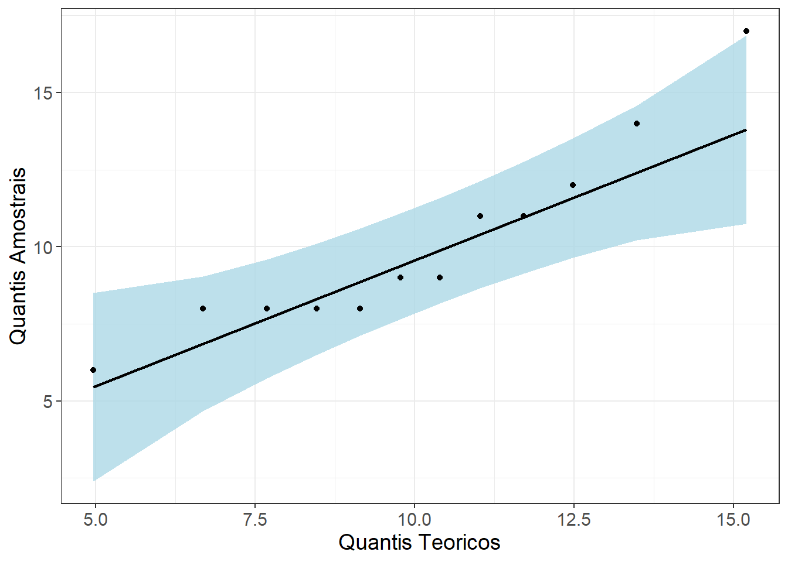
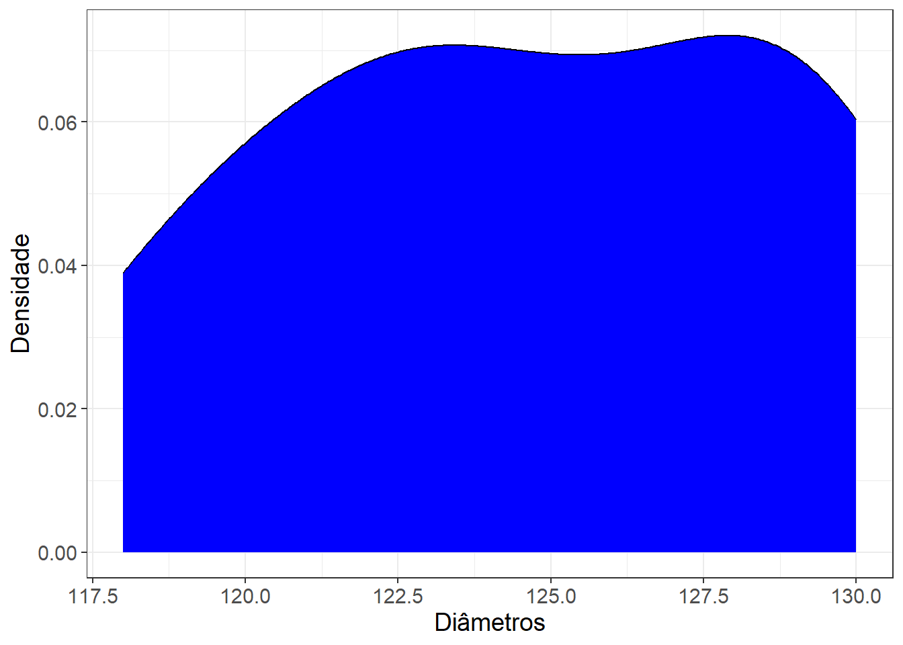
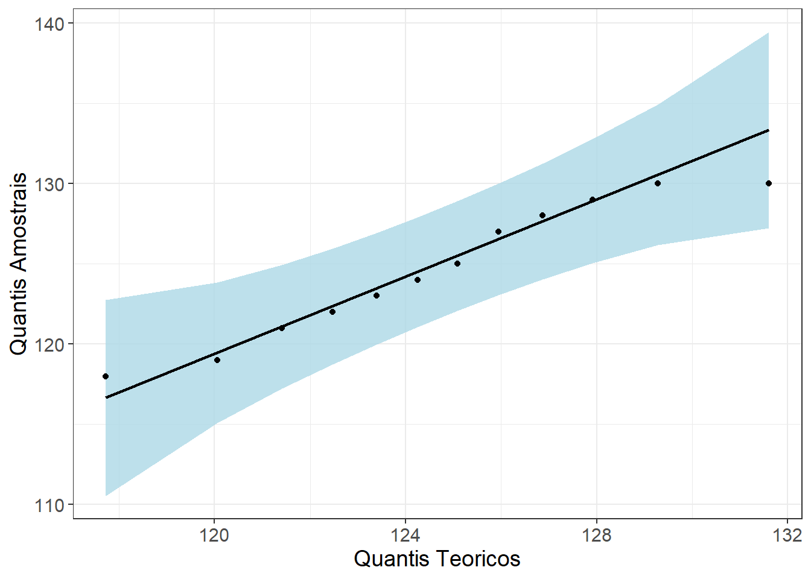
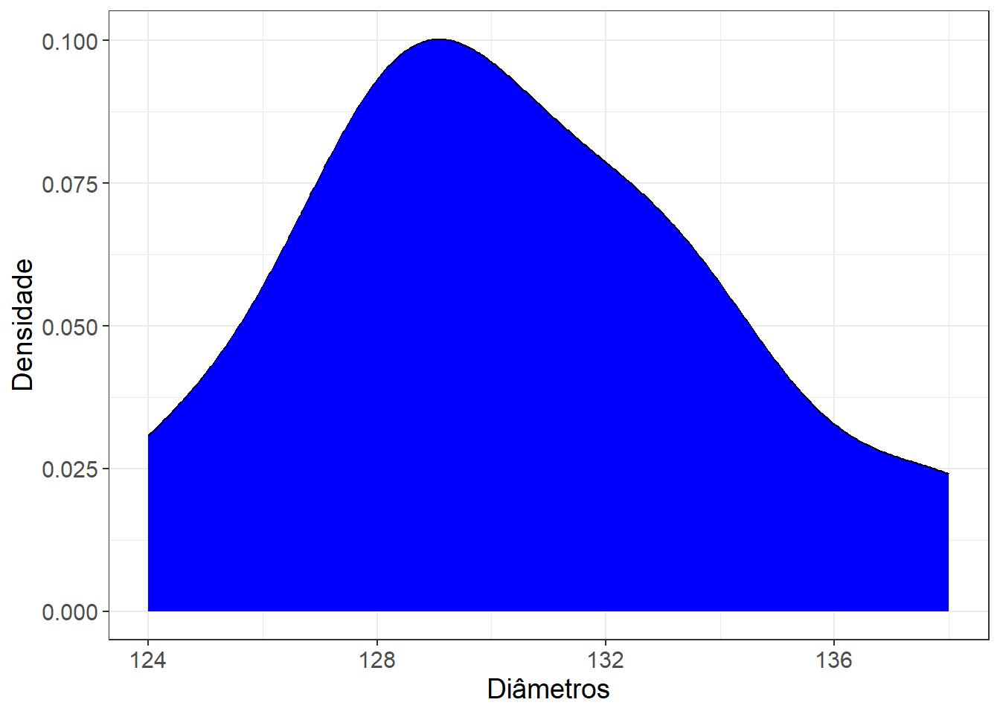
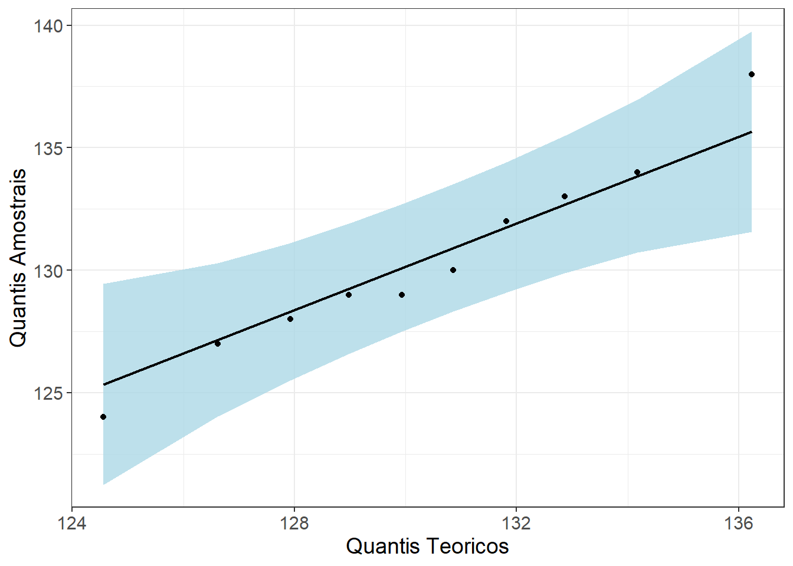
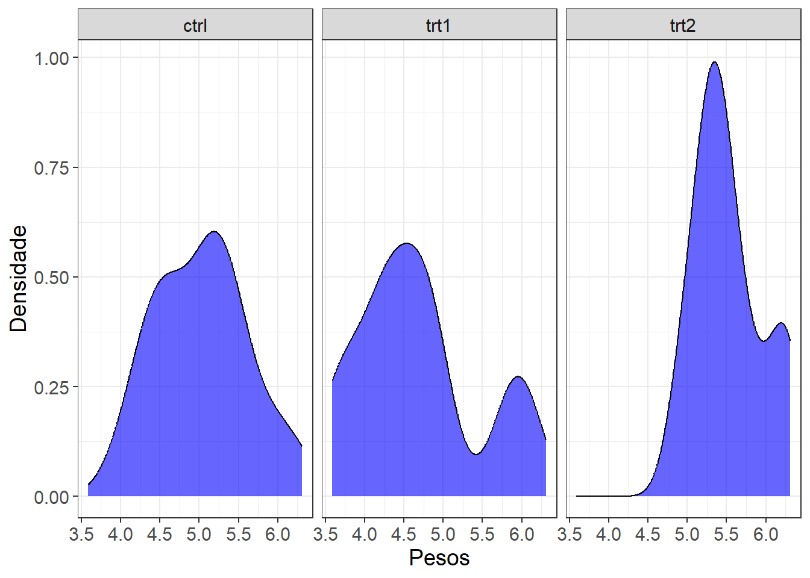
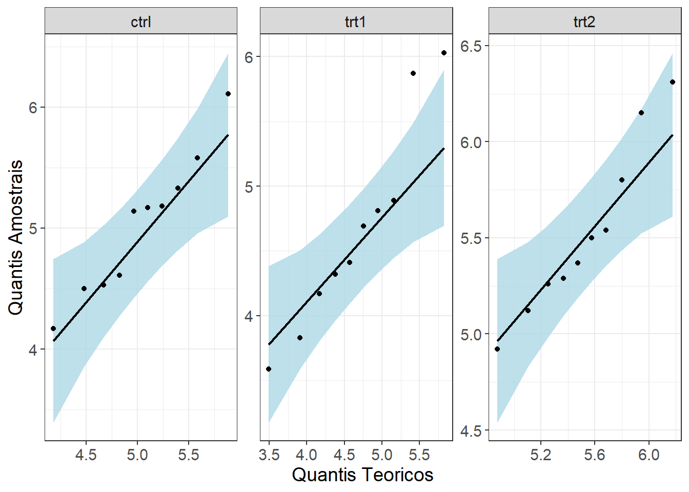

Código
require(ggplot2) # Abordagem gráfica
require(qqplotr) # Gráfico qqplot
require(DescTools) # Teste da variânciaPara este treinamento, precisaremos dos seguintes pacotes:
require(ggplot2) # Abordagem gráfica
require(qqplotr) # Gráfico qqplot
require(DescTools) # Teste da variânciaNesta prática, iremos revisar um conjunto fundamental de ferramentas da inferência estatística clássica, com foco em situações envolvendo uma, duas ou mais populações.
O ponto de partida será a avaliação da suposição de normalidade, que desempenha papel central na escolha entre métodos paramétricos e não paramétricos. Serão exploradas abordagens gráficas e um teste formal para diagnosticar desvios da normalidade.
Em seguida, abordaremos os principais testes paramétricos, organizados conforme o número de populações envolvidas:
Ao longo da prática, será dada ênfase não apenas à aplicação dos testes, mas também à interpretação dos resultados e às condições de validade de cada método.
Por fim, esta revisão servirá como base para uma etapa posterior, na qual vocês irão aplicar essas técnicas em dados reais, exigindo autonomia na escolha dos métodos, verificação de suposições e interpretação dos achados.
Antes de avançarmos para a aplicação das funções prontas do R em testes de hipótese, é importante revisitar um ponto essencial na prática inferencial: a verificação da normalidade. Muitos procedimentos paramétricos — como o teste t, teste pra variância e ANOVA — assumem que a(s) população(ões) segue(m) uma distribuição aproximadamente normal.
Graças ao Teorema Central do Limite, a normalidade da estatística (como a média amostral) tende a emergir naturalmente quando o tamanho amostral é moderado ou grande, mesmo quando a população original não é normal.
É muito importante não confundir isso com a ideia de que “amostras grandes são normais” — o que se torna aproximadamente normal é a distribuição da média amostral, não os dados em si. A população e a amostra podem continuar fortemente assimétricas, mesmo com tamanho grande.
Contudo, para amostras pequenas ou situações com forte assimetria, pode ser útil avaliar empiricamente se a suposição de normalidade é plausível.
Vamos trabalhar com ferramentas como o teste de Shapiro-Wilk, além de gráficos como densidades e QQ-plots. Assim, vocês terão um conjunto completo de instrumentos para analisar a normalidade antes de aplicar os testes paramétricos nas próximas seções.
Imagine que uma equipe da área de ergonomia está avaliando o tempo de reação de trabalhadores que operam um novo painel de controle industrial. O equipamento ainda está em fase piloto e, por isso, apenas 22 trabalhadores participaram do teste inicial. Os tempos de reação (em milissegundos) são os seguintes:
Tempos <- c(
242, 255, 248, 251, 239, 246, 244, 257, 252, 260,
241, 249, 245, 243, 254, 247, 250, 259, 263, 272,
285, 301
)
Dados <- data.frame(Tempos = Tempos)Nesse contexto, estamos diante de uma situação típica na prática profissional: uma amostra pequena (n < 30). Ou seja, é justamente aquele cenário limite em que decidir se a normalidade pode ou não ser assumida se torna relevante para a escolha entre métodos paramétricos ou não paramétricos.
O primeiro passo para avaliar a forma da distribuição é visualizar seus contornos. O gráfico de densidade permite enxergar rapidamente assimetrias, caudas mais pesadas e possíveis desvios sutis da normalidade. Ele é construído suavizando os dados por meio de uma função kernel, resultando em uma curva contínua que aproxima a distribuição dos valores observados. No R este gráfico é feito com a função geom_density do pacote ggplot2:
ggplot(Dados, aes(x = Tempos)) +
geom_density(fill="blue") +
xlab("Tempos") +
ylab("Densidade") +
theme_bw() +
theme(text = element_text(size = 14))
Note como os dados são fortemente assimétricos à direito, indo contra uma situação de normalidade dos dados.
Pode acontecer de mesmo quando o gráfico de densidade apresenta assimetria aparente, isso não impede que os dados sejam considerados aproximadamente normais. O QQ-plot pode acusar a normalidade dos dados e testes formais, como o Shapiro–Wilk, podem não rejeitar a normalidade. Isso ocorre porque pequenas assimetrias visuais nem sempre são suficientes para indicar desvios estatisticamente significativos da distribuição normal.
O gráfico quantil-quantil (Q-Q plot) é uma ferramenta visual que compara a distribuição dos dados com uma distribuição teórica, geralmente a normal. Ele faz isso confrontando os quantis da amostra com os quantis da distribuição escolhida.
O Q-Q plot é útil para diagnosticar rapidamente padrões de desvio e orientar a escolha dos testes estatísticos. No R, com o ggplot2 e o pacote qqplotr, podemos construir um Q-Q plot completo usando três funções:
stat_qq_point(): plota os pontos da comparação entre quantis.stat_qq_line(): adiciona a linha teórica de referência.stat_qq_band(): cria bandas de confiança, destacando desvios mais relevantes.Segue o código que executa este gráfico ao nosso exemplo:
ggplot(Dados, aes(sample=Tempos)) +
stat_qq_band(fill="lightblue") +
stat_qq_line() +
stat_qq_point() +
xlab("Quantis Teoricos")+
ylab("Quantis Amostrais")+
theme_bw() +
theme(text = element_text(size = 14))
Note que, como a cauda à direita da distribuição é mais pesada os pontos finais no gráfico q-q plot se encontram fora da banda de confiança, reforçando a não normalidade dos dados.
O teste de Shapiro-Wilk é um dos métodos mais utilizados para avaliar a normalidade de uma amostra, especialmente quando o tamanho amostral é pequeno ou moderado. Ele costuma ser mais poderoso que outros testes — como Kolmogorov-Smirnov — porque é mais sensível a desvios sutis da normalidade, sem exigir que os parâmetros da distribuição normal sejam conhecidos.
As hipóteses do teste são
O teste compara os valores observados com os valores esperados de uma amostra normal ordenada. A estatística de Shapiro-Wilk é, essencialmente, uma razão entre:
Valores próximos de 1 indicam boa aderência à normalidade; valores menores indicam afastamento. Para concluir sobre o teste note que:
No R, este teste é feito a partir da função shapiro.test da base do R, que recebe como argumento os dados observados. Vamos aplicar essa função ao nosso exemplo:
shapiro.test(Dados$Tempos)
Shapiro-Wilk normality test
data: Dados$Tempos
W = 0.81249, p-value = 0.0007899Note que a saída dessa função apresenta dois resultados:
W: Estatísica de teste. Quanto mais próxima de 1, maior a tendência para a normalidade dos dados.p-valor: P-valor do teste realizado.Como o p-valor é menor que 0.05, rejeitamos a hipótese nula e há evidências de que os dados não são normais. Nesse caso, não podemos realizar nenhum teste paramétrico aqui para inferir sobre parâmetros populacionais. A alternativa é recorrer à estatística não paramétrica para que seja feita a inferência nesses parâmetros.
Este é o caso mais simples do ponto de vista teórico: quando a(s) população(ões) é(são) normal(is) e a(s) variância(s) é(são) conhecida(s), a estatística de teste e os intervalos de confiança utilizam a distribuição Normal padrão (Z). Esse cenário aparece com frequência nos livros-texto porque permite introduzir conceitos fundamentais de forma algebricamente limpa.
Além disso, esse caso é excelente para fins didáticos, especialmente para simulações computacionais. Por ser um contexto totalmente controlado (normalidade perfeita e variância fixa), ele é ideal para observar empiricamente como a distribuição da média, dos estimadores e das estatísticas de teste se comporta.
Na prática aplicada, porém, populações com variância conhecida quase nunca existem. Mesmo com grande quantidade de dados históricos, a variabilidade real da população continua sendo estimada, e não conhecida. Por isso, esse caso é essencialmente teórico e tem utilidade limitada na análise estatística real. Assim, na prática, tratá-lo separadamente não acrescenta ganhos concretos para a análise de dados aplicada. Por esses motivos, NÃO ABORDAREMOS ESTE CASO AQUI.
As situações em que trabalhamos com proporções são extremamente comuns na prática estatística: porcentagem de indivíduos vacinados, proporção de peças defeituosas, taxa de aprovação, prevalência de uma doença, entre muitas outras. Em todos esses casos, cada observação pode ser representada como um sucesso (1) ou fracasso (0), isto é, como uma variável Bernoulli.
A partir deste ponto, organizaremos o estudo em duas partes fundamentais:
Proporções em uma população: Intervalos de confiança e testes de hipótese para o parâmetro \(p\).
Proporções em duas populações: Inferência para a diferença \(p_1 - p_2\), incluindo intervalos e testes de hipóteses.
Sabemos que o Teorema Central do Limite garante a normalidade aproximada de \(\hat{p}\) (ou da diferença \(\hat{p}_1 - \hat{p}_2\)), quando certas condições são atendidas. O R implementa esses procedimentos automaticamente via funções como prop.test.
A função prop.test() é utilizada para realizar o intervalo de confiança e o teste de hipótese para:
Os argumentos da função prop.test() são:
x = número de sucessos observados na amostra. Pode ser um único valor (uma população) ou um vetor com dois valores (duas populações);
n = tamanho da amostra correspondente a x. Pode ser um único valor (uma população) ou um vetor com dois valores (duas populações);
alternative = hipótese alternativa: "greater" para testes unilaterais à direita, "less" para testes unilaterais à esquerda e "two.sided" para testes bilaterais;
p = valor da proporção sob a hipótese nula (um valor para uma população ou a diferença de proporções para duas populações, sendo geralmente 0);
conf.level = nível de confiança (consequentemente, é estabelecido o nível de significância).
correct = um valor lógico que indica se a correção de continuidade será utilizada ou nao. Quando correct = TRUE, o R aplica a correção de continuidade de Yates, que consiste em subtrair 1/2 do valor absoluto da diferença entre o número de sucessos observados e o esperado no cálculo do intervalo de escore. Esse ajuste torna o intervalo mais conservador. A correção é útil quando:
o tamanho amostral é pequeno;
a proporção observada está próxima de 0 ou 1;
deseja-se um intervalo mais conservador (maior garantia de cobertura).
As saídas da função prop.test() são:
statistic: a estatística de teste X (equivalente a estatística \(Z^2\));p.value: valor-p do teste;conf.int: intervalo de confiança para a proporção ou para a diferença de proporções. Se a hipótese alternativa for diferente da bilateral, será feito um intervalo unilateral;estimate: proporção amostral (ou proporções amostrais, se duas populações);null.value: valor sob a hipótese nula;alternative: hipótese alternativa.Para retornar o intervalo de confiança somente, basta fazer prop.test(…)$conf.int.
Para utilizar a aproximação Normal e aplicar os intervalos e testes clássicos para uma proporção, assumimos que:
Uma “regra de bolso” muito utilizada é verificar se \(n\hat{p}\geq10\) e \(n(1-\hat{p})\geq10\)
Para utilizar a aproximação Normal e aplicar os intervalos e testes clássicos para a diferença de proporções, assumimos que:
Uma “regra de bolso” muito utilizada é verificar se \(n_1\hat{p_1}\geq10\), \(n_1(1-\hat{p_1})\geq10\), \(n_2\hat{p_2}\geq10\) e \(n_2(1-\hat{p_2})\geq10\)
Imagine que uma equipe de saúde ocupacional está conduzindo um estudo sobre uso correto de equipamentos de proteção individual (EPIs) em dois setores de manutenção industrial: Setor A e Setor B. O objetivo é comparar a proporção de trabalhadores que utilizam corretamente o capacete de segurança em cada setor.
Foram observados 40 trabalhadores do Setor A e 50 trabalhadores do Setor B, registrando para cada trabalhador:
Os dados coletados foram os seguintes:
# Setor A
UsoCapacete_A <- c(
1,1,1,1,0,1,1,1,1,0,
1,1,0,1,1,1,1,0,1,0,
1,1,1,0,1,0,1,1,1,1,
0,0,1,1,1,1,1,1,1,0
)
# Setor B
UsoCapacete_B <- c(
1,1,0,0,1,1,1,0,1,1,
1,1,1,0,1,1,1,1,1,1,
1,0,0,1,1,1,0,1,1,1,
0,1,1,1,0,0,1,0,1,1,
1,1,0,1,0,1,1,1,0,1
)
Dados1 = data.frame(UsoCapacete_A=UsoCapacete_A)
Dados2 = data.frame(UsoCapacete_B=UsoCapacete_B)
n_A = length(Dados1$UsoCapacete_A)
Sucessos_A = sum(Dados1$UsoCapacete_A)
p_hat_A = mean(Dados1$UsoCapacete_A)
n_B = length(Dados2$UsoCapacete_B)
Sucessos_B = sum(Dados2$UsoCapacete_B)
p_hat_B = mean(Dados2$UsoCapacete_B)No nosso exemplo prático com os setores A e B, como temos tamanhos amostrais razoáveis e proporções não extremas, não vamos aplicar a correção. Vamos testar se há diferença significativa no uso correto do capacete usando:
prop.test(
x = c(Sucessos_A, Sucessos_B),
n = c(n_A, n_B),
alternative = "two.sided",
correct = FALSE
)
2-sample test for equality of proportions without continuity correction
data: c(Sucessos_A, Sucessos_B) out of c(n_A, n_B)
X-squared = 0.10227, df = 1, p-value = 0.7491
alternative hypothesis: two.sided
95 percent confidence interval:
-0.153018 0.213018
sample estimates:
prop 1 prop 2
0.75 0.72 Com um p-valor de 0,7491 há evidências de que as duas proporções populacionais são equivalentes. Tal resultado é corroborado pelo intervalo de confiança, que inclui o 0.
Na prática estatística, muitas vezes precisamos avaliar a variabilidade de uma população ou comparar a variabilidade entre duas populações. Estamos interessados no parâmetro \(\sigma^2\), a variância populacional, que mede o grau de dispersão dos dados em torno da média.
Podemos considerar dois cenários principais:
Uma população
Testes de hipótese ou intervalos de confiança para \(\sigma^2\).
Duas populações independentes
Comparação de variâncias \(\sigma_1^2\) e \(\sigma_2^2\) usando testes de igualdade de variâncias ou intervalos de confiança.
Em ambos os casos, supomos que os dados sigam uma distribuição normal. Este é um requisito essencial, pois a estatística de teste usada (qui-quadrado para uma população, F para duas populações) depende da normalidade.
O R implementa testes de variância de forma prática por meio da função VarTest() do pacote DescTools. Esta função permite:
Os argumentos da função VarTest() são:
x = vetor com os dados da amostra da primeira população;y = vetor com os dados da amostra da segunda população (opcional, para comparação entre duas populações);alternative = hipótese alternativa: "greater" para hipótese alternativa unilateral à direita, "less" para hipótese unilateral à esquerda, e "two.sided" para testar desigualdade bilateral;ratio = valor numérico que representa a razão das variâncias sob a hipótese nula (padrão é 1);sigma.squared = valor numérico que representa a variância populacional sob a hipótese nula (utilizado para uma população);conf.level = nível de confiança para o intervalo de confiança.As saídas da função VarTest() são:
statistic: a estatística X (uma população) ou F (duas populações) do teste;p.value: valor-p do teste;conf.int: intervalo de confiança. Se a hipótese alternativa for unilateral, o intervalo será unilateral;estimate: estimativa da variância populacional (uma população) ou razão das variâncias amostrais (duas populações) ;null.value: valor sob a hipótese nula;alternative: hipótese alternativa.Para retornar somente o intervalo de confiança, basta fazer VarTest(...)$conf.level.
Para aplicar intervalos de confiança e testes clássicos para a variância, assumimos que:
Para aplicar intervalos e testes clássicos para a comparação de variâncias, assumimos que:
Imagine que uma fábrica deseja avaliar a consistência da produção em duas máquinas diferentes: Máquina A e Máquina B. O objetivo é comparar a variabilidade no diâmetro das peças produzidas por cada máquina.
Foram coletadas 15 peças da Máquina A e 18 peças da Máquina B, medindo o diâmetro em milímetros:
# Máquina A
Diametros_A <- c(
10.12, 9.94, 10.08, 10.01, 9.92,
10.15, 9.98, 10.05, 9.90, 10.06,
10.11, 9.96, 10.09, 10.03, 10.14
)
# Máquina B
Diametros_B <- c(
9.88, 10.07, 9.95, 10.12, 9.90,
10.10, 10.04, 10.15, 9.93, 10.08,
10.11, 9.92, 10.05, 10.09, 9.97,
10.13, 10.02, 9.94
)
Dados1 = data.frame(Diametros_A=Diametros_A)
Dados2 = data.frame(Diametros_B=Diametros_B)O objetivo agora é construir intervalos de confiança e realizar testes de hipótese para a razão \(\sigma1^2/\sigma_2^2\), a verdadeira razão entre as variâncias dos diâmetros das peças produzidas pelas duas empresas.
Entretanto, antes, precisamos verificar se há indícios de que os dados de ambas as amostras são normalmente distribuídos. Vamos aos diagnósticos:
Para a primeira amostra:
ggplot(Dados1, aes(x = Diametros_A)) +
geom_density(fill="blue") +
xlab("Diâmetros") +
ylab("Densidade") +
theme_bw() +
theme(text = element_text(size = 14))
ggplot(Dados1, aes(sample=Diametros_A)) +
stat_qq_band(fill="lightblue") +
stat_qq_line() +
stat_qq_point() +
xlab("Quantis Teoricos")+
ylab("Quantis Amostrais")+
theme_bw() +
theme(text = element_text(size = 14))
shapiro.test(Dados1$Diametros_A)
Shapiro-Wilk normality test
data: Dados1$Diametros_A
W = 0.95042, p-value = 0.5311Para a segunda amostra:
ggplot(Dados2, aes(x = Diametros_B)) +
geom_density(fill="blue") +
xlab("Diâmetros") +
ylab("Densidade") +
theme_bw() +
theme(text = element_text(size = 14))
ggplot(Dados2, aes(sample=Diametros_B)) +
stat_qq_band(fill="lightblue") +
stat_qq_line() +
stat_qq_point() +
xlab("Quantis Teoricos")+
ylab("Quantis Amostrais")+
theme_bw() +
theme(text = element_text(size = 14))shapiro.test(Dados2$Diametros_B)
Shapiro-Wilk normality test
data: Dados2$Diametros_B
W = 0.92416, p-value = 0.1532Em ambas as amostras, os gráficos de densidade não apontam sérios desvios da simetria. Os gráficos qq-plot apontam para a normalidade dos dados, que também é corroborada pelos testes de normalidade de Shapiro Wilk, a um nível de 5%. Então temos indícios de que os dados das duas populações são normalmente distribuídos.
Vamos testar se a variabilidade dos diâmetros da amostra A é menor que a variabilidade dos diâmetros da amostra B:
VarTest(x=Dados1$Diametros_A,
y=Dados2$Diametros_B,
alternative="less")
F test to compare two variances
data: x and y
F = 0.85819, num df = 14, denom df = 17, p-value = 0.3908
alternative hypothesis: true ratio of variances is less than 1
95 percent confidence interval:
0.000000 2.083833
sample estimates:
ratio of variances
0.8581878 Com um valor-p de 0,3908, não há evidências de que a variabilidade da fábrica A é menor que a variabilidade da fábrica B. Veja que o intervalo de confiança pra razão inclui o valor 1.
Na prática estatística, muitas vezes precisamos comparar médias de populações normais quando as variâncias são desconhecidas. Nesse contexto, o parâmetro de interesse é \(\mu\), a média populacional, enquanto a variabilidade é estimada a partir dos dados amostrais.
A análise de médias com variâncias desconhecidas é especialmente relevante quando:
Em todos os casos, supomos que os dados sigam uma distribuição normal, pois a estatística de teste t depende dessa suposição.
Os argumentos da função t.test() são:
x = vetor com os dados da amostra da primeira população (utilize este argumento se você tiver somente uma população);y = vetor com os dados da amostra da segunda população (opcional);alternative = hipótese alternativa: "greater" para teste unilateral à direita, "less" para teste unilateral à esquerda e "two.sided" para teste bilateral (padrão);mu = número que representa o valor da média ou da diferença das médias sob a hipótese nula (padrão é 0);conf.level = nível de confiança do intervalo (padrão é 0.95);paired = se TRUE, realiza o teste t pareado (quando x e y são dependentes);var.equal = se TRUE, assume variâncias populacionais iguais (caso de teste t com variâncias iguais); se FALSE, realiza o teste t de Welch (variâncias desiguais).As saídas da função t.test() são:
statistic: a estatística T;p.value: valor-p do teste;conf.int: intervalo de confiança para a média ou diferença de médias;estimate: estimativa da média ou da diferença das médias;null.value: valor de \(\mu_0\) sob a hipótese nula;alternative: hipótese alternativa;method: tipo de teste t realizado (uma amostra, duas amostras, pareado, Welch etc.);data.name: nome dos objetos analisados.Para retornar o intervalo de confiança somente, basta usar t.test(...)$conf.int.
Para aplicar intervalos de confiança e testes t para a média, assumimos que:
Para aplicar o intervalo de confiança e o teste de hipótese para amostras pareadas, assumimos:
Importante: não é necessário que as duas variáveis originais sejam normais, apenas as diferenças.
Para aplicar o intervalo de confiança e o teste t para duas populações independentes, assumimos:
Um fisioterapeuta esportivo deseja avaliar se um programa de fortalecimento muscular de 6 semanas melhora o tempo de reação de atletas amadores. O tempo de reação foi medido em milissegundos (ms) usando o mesmo equipamento, antes e depois do programa de treinamento. Como cada atleta é avaliado duas vezes, trata-se de um caso de amostras pareadas.
Abaixo estão os dados coletados de 12 atletas:
Tempo_antes <- c(255, 240, 262, 274, 248, 260,
251, 243, 270, 258, 266, 249)
Tempo_depois <- c(238, 231, 250, 260, 240, 252,
243, 237, 259, 249, 255, 241)
Dados <- data.frame(antes = Tempo_antes, depois = Tempo_depois)
Dados$Diferenca = Dados$antes - Dados$depoisConsidere o objetivo de investigar, a partir do teste de hipótese, se a média do tempo de reação antes do treinamento é maior que a média depois do treinamento.
Entretanto, antes precisamos verificar se há indícios de que as diferenças são normalmente distribuídas. Vamos aos diagnósticos:
ggplot(Dados, aes(x = Diferenca)) +
geom_density(fill="blue") +
xlab("Diâmetros") +
ylab("Densidade") +
theme_bw() +
theme(text = element_text(size = 14))
ggplot(Dados, aes(sample=Diferenca)) +
stat_qq_band(fill="lightblue") +
stat_qq_line() +
stat_qq_point() +
xlab("Quantis Teoricos")+
ylab("Quantis Amostrais")+
theme_bw() +
theme(text = element_text(size = 14))
shapiro.test(Dados$Diferenca)
Shapiro-Wilk normality test
data: Dados$Diferenca
W = 0.89851, p-value = 0.1518O gráfico de densidade não aponta um desvio muito sério de simetria. O gráfico qq-plot aponta para a normalidade dos dados (exceto por um desvio que não é grave), que também é corroborada pelo teste de normalidade de Shapiro Wilk, a um nível de 5%. Então temos indícios de que as diferenças são normalmente distribuídas.
Assim, tem-se o seguinte teste de hipótese:
t.test(Dados$antes,
Dados$depois,
paired = TRUE,
alternative = "greater")
Paired t-test
data: Dados$antes and Dados$depois
t = 11.31, df = 11, p-value = 1.066e-07
alternative hypothesis: true mean difference is greater than 0
95 percent confidence interval:
8.482251 Inf
sample estimates:
mean difference
10.08333 Com um valor-p próximo de 0 há evidências de que o treinamento foi eficiente, reduzindo o tempo médio de reação.
Um pesquisador deseja avaliar se um novo suplemento nutricional melhora o desempenho de atletas em um teste de força máxima.
Dois grupos independentes foram avaliados:
A variável medida foi a força máxima (kg) obtida no teste.
Abaixo estão os dados coletados (22 atletas no total):
Controle <- c(124, 118, 130, 122, 127, 119, 125, 121, 128, 123, 129, 130)
Tratamento <- c(127, 124, 128, 133, 138, 129, 130, 132, 129, 134)
Dados1 <- data.frame(Controle = Controle)
Dados2 <- data.frame(Tratamento = Tratamento) O objetivo agora é construir intervalos de confiança e realizar testes de hipótese para a diferença entre as duas médias populacionais.
Entretanto, antes precisamos verificar se há indícios de que os dados das duas amostras são provenientes de populações normais e, caso positivo, verificar a igualdade das variâncias. Vamos aos diagnósticos de normalidade. Na primeira amostra:
ggplot(Dados1, aes(x = Controle)) +
geom_density(fill="blue") +
xlab("Diâmetros") +
ylab("Densidade") +
theme_bw() +
theme(text = element_text(size = 14))
ggplot(Dados1, aes(sample=Controle)) +
stat_qq_band(fill="lightblue") +
stat_qq_line() +
stat_qq_point() +
xlab("Quantis Teoricos")+
ylab("Quantis Amostrais")+
theme_bw() +
theme(text = element_text(size = 14))
shapiro.test(Dados1$Controle)
Shapiro-Wilk normality test
data: Dados1$Controle
W = 0.93993, p-value = 0.4971Na segunda amostra:
ggplot(Dados2, aes(x = Tratamento)) +
geom_density(fill="blue") +
xlab("Diâmetros") +
ylab("Densidade") +
theme_bw() +
theme(text = element_text(size = 14))
ggplot(Dados2, aes(sample=Tratamento)) +
stat_qq_band(fill="lightblue") +
stat_qq_line() +
stat_qq_point() +
xlab("Quantis Teoricos")+
ylab("Quantis Amostrais")+
theme_bw() +
theme(text = element_text(size = 14))
shapiro.test(Dados2$Tratamento)
Shapiro-Wilk normality test
data: Dados2$Tratamento
W = 0.9803, p-value = 0.9667Em ambas as amostras, os gráficos de densidade não apontam sérios desvios da simetria. Os gráficos qq-plot apontam para a normalidade dos dados, que também é corroborada pelos testes de normalidade de Shapiro Wilk, a um nível de 5%. Então temos indícios de que os dados das duas populações são normalmente distribuídos.
Agora verificamos se as variâncias são iguais ou diferentes:
VarTest(x=Dados1$Controle,
y=Dados2$Tratamento)
F test to compare two variances
data: x and y
F = 1.107, num df = 11, denom df = 9, p-value = 0.8932
alternative hypothesis: true ratio of variances is not equal to 1
95 percent confidence interval:
0.2829693 3.9717928
sample estimates:
ratio of variances
1.106997 Logo, ao nível de 5% de significância, temos evidências de que as variâncias são iguais. Assim, essa informção deverá ser levada para a função t.test
Assim, para testar se as médias são iguais ou não, utilizamos os seguintes comandos:
t.test(Dados1$Controle,
Dados2$Tratamento,
var.equal = TRUE,
alternative = "two.sided")
Two Sample t-test
data: Dados1$Controle and Dados2$Tratamento
t = -3.2714, df = 20, p-value = 0.003819
alternative hypothesis: true difference in means is not equal to 0
95 percent confidence interval:
-9.389096 -2.077570
sample estimates:
mean of x mean of y
124.6667 130.4000 Portanto, com um valor-p de 0.89, há evidências de que as médias de força são iguais.
Quando trabalhamos com amostras pequenas, a aplicação do teste t exige atenção especial à normalidade e, no caso de duas populações independentes, à igualdade de variâncias.
Agora, entrando no cenário de amostras grandes, algumas dessas exigências tornam-se menos rígidas, especialmente por causa do Teorema Central do Limite. Ainda assim, existem verificações importantes que devem ser feitas antes de aplicar o teste t.
Em todos os cenários analisados — uma população, duas populações dependentes e duas independentes (com ou sem variâncias iguais) — a função recomendada no R continua sendo t.test. Isso ocorre porque, com amostras grandes, a distribuição t se aproxima da distribuição normal padrão, de modo que o teste t e o teste z tornam-se praticamente equivalentes. Por isso, não há necessidade de usar um teste z separado: o próprio t.test já é totalmente adequado e robusto para esses casos.
A seguir, detalhamos os cuidados necessários nos contextos clássicos.
O que verificar antes do teste:
O que verificar antes do teste:
O que verificar antes do teste:
A Análise de Variância (ANOVA) é uma técnica estatística usada para verificar se há diferenças significativas entre as médias de três ou mais populações.
Para que a ANOVA seja válida, as seguintes suposições devem ser satisfeitas:
A base de dados PlantGrowth é um conjunto clássico disponível no R que registra o peso de plantas submetidas a três diferentes tratamentos.
weight: peso das plantas (em unidades de massa)group: tipo de tratamento aplicado às plantas, com três níveis:
ctrl: grupo controle (sem tratamento)trt1: tratamento 1trt2: tratamento 2Ou seja, ctrl é o grupo padrão, e trt1 e trt2 são dois grupos experimentais submetidos a diferentes tratamentos para avaliar o efeito sobre o peso das plantas. Em cada grupo, foram avaliadas 10 plantas. Esta base é muito utilizada para demonstrar técnicas de comparação entre médias, como a ANOVA. A base de dados pode ser acionada com o seguinte comando:
PlantGrowth weight group
1 4.17 ctrl
2 5.58 ctrl
3 5.18 ctrl
4 6.11 ctrl
5 4.50 ctrl
6 4.61 ctrl
7 5.17 ctrl
8 4.53 ctrl
9 5.33 ctrl
10 5.14 ctrl
11 4.81 trt1
12 4.17 trt1
13 4.41 trt1
14 3.59 trt1
15 5.87 trt1
16 3.83 trt1
17 6.03 trt1
18 4.89 trt1
19 4.32 trt1
20 4.69 trt1
21 6.31 trt2
22 5.12 trt2
23 5.54 trt2
24 5.50 trt2
25 5.37 trt2
26 5.29 trt2
27 4.92 trt2
28 6.15 trt2
29 5.80 trt2
30 5.26 trt2Para aplicar a ANOVA, é fundamental que os dados sejam normalmente distribuídos, ou tenha um tamanho suficiente para que seja utilizado o teorema central do limite. Vamos checar se os grupos de plantas possuem um peso normalmente distribuído: com os diagnósticos de normalidade que aprendemos:
ggplot(PlantGrowth, aes(x = weight)) +
geom_density(fill = "blue", alpha = 0.6) +
facet_wrap(~ group) +
xlab("Pesos") +
ylab("Densidade") +
theme_bw() +
theme(text = element_text(size = 14))
ggplot(PlantGrowth, aes(sample = weight)) +
stat_qq_band(fill="lightblue") +
stat_qq_line() +
stat_qq_point() +
facet_wrap(~group,scales = "free")+
xlab("Quantis Teoricos")+
ylab("Quantis Amostrais")+
theme_bw() +
theme(text = element_text(size = 14))
by(PlantGrowth$weight, PlantGrowth$group, shapiro.test)PlantGrowth$group: ctrl
Shapiro-Wilk normality test
data: dd[x, ]
W = 0.95668, p-value = 0.7475
------------------------------------------------------------
PlantGrowth$group: trt1
Shapiro-Wilk normality test
data: dd[x, ]
W = 0.93041, p-value = 0.4519
------------------------------------------------------------
PlantGrowth$group: trt2
Shapiro-Wilk normality test
data: dd[x, ]
W = 0.94101, p-value = 0.5643Dessa forma, há evidências (com um nível de significância de 5%) de que os dados em cada grupo são normalmente distribuídos. Há uma ressalva que houve um desvio no qqplot para o grupo trt1, mas a ANOVA é robusta a pequenos desvios de normalidade, especialmente se as variâncias forem parecidas e o n dos grupos não é desigual.
Uma outra suposição fundamental é a homocedasticidade, ou seja, a igualdade das variâncias entre os grupos. A violação dessa suposição pode comprometer a validade dos resultados da ANOVA. Dois testes estatísticos amplamente utilizados para verificar essa suposição são:
Em ambos os testes as hipóteses são:
O teste de Bartlett é sensível à suposição de normalidade. Ele é mais poderoso quando os dados seguem uma distribuição normal.
Este teste deve ser usado
A função bartlett.test() é utilizada no R para testar a homogeneidade de variâncias com a seguinte sintaxe:
bartlett.test(formula, data)
formula: uma fórmula do tipo resposta~grupo.
data: base de dados.
Para os dados da base PlanthGrowth, o teste de Bartlett aponta o seguinte:
bartlett.test(formula = weight~group,data = PlantGrowth)
Bartlett test of homogeneity of variances
data: weight by group
Bartlett's K-squared = 2.8786, df = 2, p-value = 0.2371De acordo com o teste de Bartlett, há evidencias (ao nível de 5%) de que a suposição de homocedasticidade é atendida.
O teste de Levene é uma alternativa robusta ao teste de Bartlett. Ele é menos sensível a desvios da normalidade.
Assim, para este teste, considere
A função LeveneTest() do pacote DescTools é utilizada no R para testar a homogeneidade de variâncias com a seguinte sintaxe:
LeveneTest(formula, data)
formula: uma fórmula do tipo resposta~grupo.
data: base de dados.
Vamos aplicar o teste de Levene nesse caso:
LeveneTest(formula = weight~group,data = PlantGrowth)Levene's Test for Homogeneity of Variance (center = median)
Df F value Pr(>F)
group 2 1.1192 0.3412
27 De acordo com o teste de Levene, há evidencias (ao nível de 5%) de que a suposição de homocedasticidade é atendida.
Como não ficamos tão seguros da suposição de normalidade dos dados, o teste de Levene é mais adequado aqui.
Com as suposições verificadas, podemos aplicar a ANOVA. No R, isso é feito com a função aov, que possui a seguinte sintaxe:
aov(formula, data)
formula: uma fórmula do tipo resposta~grupo.
data: base de dados.
Vamos aplicar esta função aos dados da base PlantGrowth:
ANOVA = aov(formula = weight~group,data = PlantGrowth)
summary(ANOVA) Df Sum Sq Mean Sq F value Pr(>F)
group 2 3.766 1.8832 4.846 0.0159 *
Residuals 27 10.492 0.3886
---
Signif. codes: 0 '***' 0.001 '**' 0.01 '*' 0.05 '.' 0.1 ' ' 1Note que a saída da função apresenta, para os grupos e resíduos:
Assim, rejeitamos a hipótese nula de igualdade das médias para os três grupos. Isto é, há evidências (ao nível de 5%) de que exista \(i\) e \(j\), tal que \(i\neq j\) e \(\mu_i\neq \mu_j\).
Após uma ANOVA rejeitar a hipótese nula, usamos testes de comparação múltipla para descobrir quais pares de grupos diferem. Existem diversos testes de comparação múltipla disponíveis na literatura. Aqui, usaremos os testes:
Em ambos os testes, considere que temos \(k\) grupos com médias populacionais \(\mu_1, \mu_2, \ldots, \mu_k\).
Os testes de comparação múltipla realizam comparações par-a-par entre essas médias. Para cada par \((i,j)\), as hipóteses são:
Hipótese nula (\(H_0\)):
\[ H_0: \mu_i = \mu_j \]
Ou seja, as médias dos grupos \(i\) e \(j\) são iguais.
Hipótese alternativa (\(H_1\)):
\[ H_1: \mu_i \ne \mu_j \]
Ou seja, as médias dos grupos \(i\) e \(j\) são diferentes.
Estas hipóteses são testadas para todos os pares \((i,j)\) possíveis entre os \(k\) grupos, e deve-se atentar à uma correção do nível \(\alpha\) para que o erro do tipo I não seja inflacionado.
O teste de Bonferroni é um método de comparações múltiplas usado após uma ANOVA quando se rejeita a hipótese nula de igualdade entre as médias de três ou mais grupos.
Sua principal função é controlar o erro do tipo I. Ele faz isso ajustando o nível de significância \(\alpha\) dividido pelo número de comparações. É um método conservador, ou seja, reduz bastante a chance de falsos positivos, mas com menor poder estatístico.
No R, o teste de Bonferroni pode ser realizado com a função pairwise.t.test(), que tem a seguinte sintaxe:
pairwise.t.test(x,g,p.adjust.method)em que
x é a variável respostag a variável de grupop.adjust.method é o tipo de correção a ser realizadaPara o método bonferroni, especifique o argumento p.adjust.method = "bonferroni".
Na base de dados de PlantGrowth, temos 3 comparações múltiplas a serem executados. Assim, será feito um ajuste no valor-p de acordo com essa quantidade de combinações:
Bonferroni = pairwise.t.test(x=PlantGrowth$weight,g=PlantGrowth$group,p.adjust.method = "bonferroni")
Bonferroni
Pairwise comparisons using t tests with pooled SD
data: PlantGrowth$weight and PlantGrowth$group
ctrl trt1
trt1 0.583 -
trt2 0.263 0.013
P value adjustment method: bonferroni Assim, de acordo com o teste de Bonferroni, os grupos trt1 e trt2 possuem médias diferentes (a um nível de 5% de significância)
O teste de Tukey, também chamado de Tukey HSD (Honest Significant Difference), é utilizado após uma ANOVA quando encontramos evidência de que pelo menos um grupo difere dos demais.
Ele serve para realizar comparações múltiplas entre todas as médias 2 a 2, controlando o erro do tipo I no conjunto das comparações.
O teste de Tukey pode ser aplicado diretamente a um modelo ajustado com aov() utilizando a função TukeyHSD().
Essa função aplica automaticamente a correção para comparações múltiplas — mais precisamente, ela controla o erro do tipo I, usando o critério de Tukey baseado na distribuição studentizada range.
Na base de dados de PlantGrowth, temos o seguinte comando:
TukeyHSD(ANOVA) Tukey multiple comparisons of means
95% family-wise confidence level
Fit: aov(formula = weight ~ group, data = PlantGrowth)
$group
diff lwr upr p adj
trt1-ctrl -0.371 -1.0622161 0.3202161 0.3908711
trt2-ctrl 0.494 -0.1972161 1.1852161 0.1979960
trt2-trt1 0.865 0.1737839 1.5562161 0.0120064Assim, também de acordo com o teste de Tukey, foi detectada uma diferença (ao nível de 5%) nas médias dos grupos trt1 e trt2.
A escolha do teste depende do objetivo da análise, do número de comparações, do equilíbrio e tamanho das amostras, e das suposições dos dados:
Se o foco é comparar todos os pares de médias e as amostras são relativamente balanceadas, o teste de Tukey costuma ser a melhor escolha por equilibrar controle de erro e poder.
Se for necessário um ajuste mais rigoroso para evitar falsos positivos, o teste de Bonferroni é uma opção simples e segura, apesar de mais conservadora.
A ANOVA clássica depende de três suposições principais:
Quando alguma dessas condições muda, ou quando o desenho experimental é diferente, usamos extensões da ANOVA. A seguir, mostramos como proceder no R em cada situação.
Quando os tamanhos amostrais são grandes, o Teorema Central do Limite garante que a distribuição da média é aproximadamente normal. Por isso, a ANOVA clássica tende a ser robusta mesmo com desvios de normalidade.
Ainda assim, recomenda-se verificar a homocedasticidade com o teste de Bartlet (dados normais) ou levene (dados não normais).
Quando os mesmos indivíduos são medidos em mais de um momento/condição, as observações não são independentes. Nesse caso, NÃO se usa a ANOVA tradicional, mas sim a ANOVA para medidas repetidas
Quando as variâncias entre os grupos NÃO são iguais, a ANOVA clássica NÃO deve ser usada. A extensão correta é ANOVA de Welch (não assume variâncias iguais).